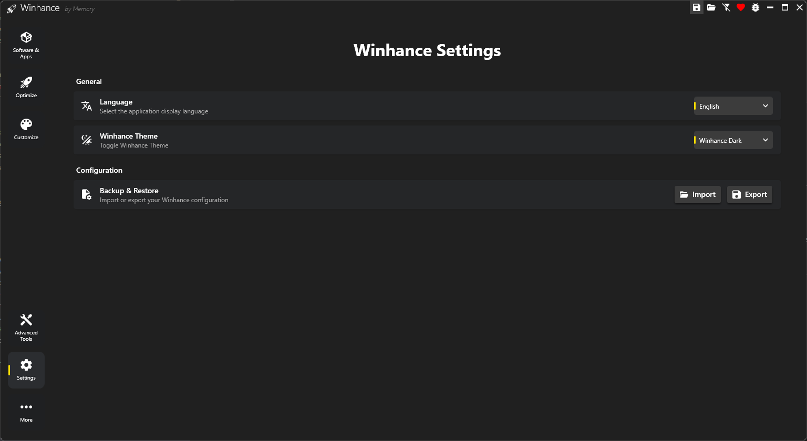

Settings
The Settings page allows you to customize Winhance's application preferences, including the display language, UI theme, and configuration backup/restore options.
Accessing Settings
To access the Settings page, click the Settings button (gear icon) in the left navigation pane. The Settings button is located below the Advanced Tools option.
General Settings
The General section contains settings that control Winhance's appearance and behavior.
Language
Winhance supports 23 languages to make the application accessible to users worldwide. The entire user interface, including all setting names, descriptions, and dialogs, will be translated to your selected language.
To change the language:
- Navigate to the Settings page.
- In the Language dropdown, select your preferred language.
- The change takes effect immediately - no restart required.
Supported Languages
Your language preference is saved automatically and will persist across Winhance sessions. If you want to contribute translations or improve existing ones, check out the How to Contribute page.
Winhance Theme
The Winhance Theme setting controls the appearance of the Winhance application itself - not your Windows system theme. This allows you to use Winhance in your preferred visual mode regardless of your Windows theme settings.
Available options:
- Winhance Dark: A dark color scheme that's easy on the eyes, especially in low-light environments.
- Winhance Light: A light color scheme for bright environments or users who prefer light interfaces.
To change the theme:
- Navigate to the Settings page.
- In the Winhance Theme dropdown, select either "Winhance Dark" or "Winhance Light".
- The theme changes immediately.
Don't confuse the Winhance Theme setting (which controls Winhance's UI) with the Windows Theme setting found in the Customize > Windows Theme section (which controls your Windows system appearance). They are independent settings.
Configuration
The Configuration section provides tools to backup and restore your Winhance settings.
Backup & Restore
Winhance allows you to export all your current selections and settings to a configuration file, which you can later import to restore your preferences or apply them to another computer.
Import
Click the Import button to load a previously saved configuration file or Winhance's recommended configuration.
- Import my own config: Select a
.winhancefile from your computer. - Import recommended config: Load Winhance's built-in recommended settings.
After selecting a configuration source, you'll be presented with options to choose which sections to apply. See the Configuration Files guide for detailed information.
Export
Click the Export button to save your current Winhance selections and settings to a .winhance file.
- All checked Windows apps (apps to be removed)
- All checked external apps (apps to be installed)
- All Optimize settings with their current values
- All Customize settings with their current values
Import and Export can also be accessed directly from the top navigation bar using the folder icon (Import) and floppy disk icon (Export), without needing to navigate to the Settings page.
Use Cases
Setting Up a New Computer
- On your configured computer, go to Settings and click Export.
- Save the
.winhancefile to a USB drive or cloud storage. - On the new computer, install Winhance and go to Settings.
- Click Import and select your configuration file.
- Choose to process all sections automatically for a quick setup.
Creating a Universal Config
If you manage both Windows 10 and Windows 11 machines:
- Turn off the Version Filter (filter icon in top nav) to show all settings.
- Configure all settings for both Windows versions.
- Export the configuration.
- This config can now be imported on either Windows 10 or Windows 11, and Winhance will automatically apply only the compatible settings.
Sharing Configurations
Configuration files can be shared with other users. Common uses include:
- IT administrators deploying standardized settings across an organization
- Tech enthusiasts sharing optimized configurations with the community
- Content creators providing recommended settings to their audience